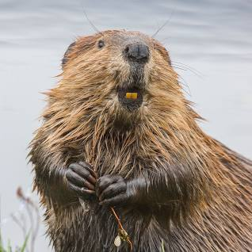

Beaver

Beavers are large rodents known for their impressive dam-building abilities and aquatic lifestyle.
Physical Characteristics
- Size: Beavers vary in size, with adults typically ranging from 30 to 60 pounds in weight.
- Coat: They have thick, waterproof fur that keeps them warm in the water.
- Tail: Beavers have large, flat tails that help them swim and are used for communication and balance.
Behavior and Habitat
- Habitat: Beavers are found in North America, Europe, and Asia, inhabiting freshwater environments like rivers, lakes, and ponds.
- Dam Building: They are known for their construction of dams, which create ponds that provide protection from predators and easier access to food.
- Nocturnal: Beavers are primarily nocturnal, being more active during the night.
Diet
Beavers are herbivores and primarily feed on bark, leaves, aquatic plants, and the inner bark of trees.
Conservation Status
Many beaver populations have rebounded due to conservation efforts, but they still face some challenges, including habitat loss and conflicts with human activities.
Interesting Facts
- Engineering Skills: Beavers are considered ecosystem engineers for their ability to modify habitats through dam-building.
- Dam Construction: Beavers build dams using sticks, mud, and rocks to create water barriers for their lodges and to create calm, deep water for easier access.
- Lodges: Beavers build dome-shaped lodges with underwater entrances, providing safety and warmth during the winter months.